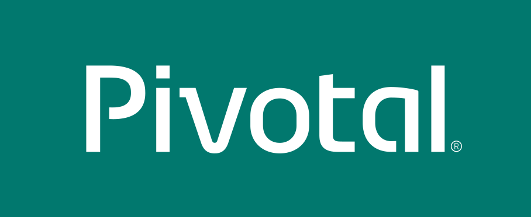
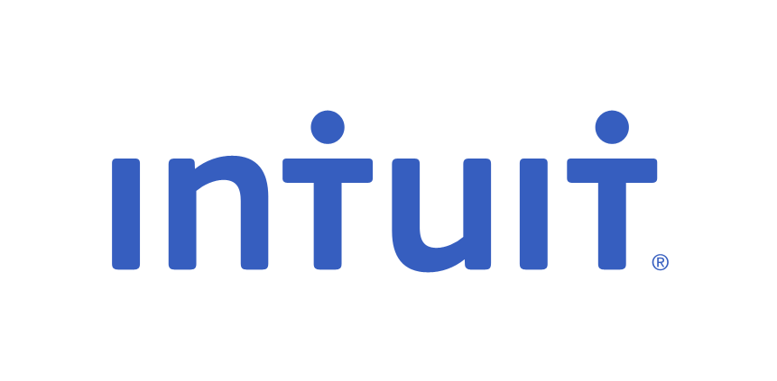
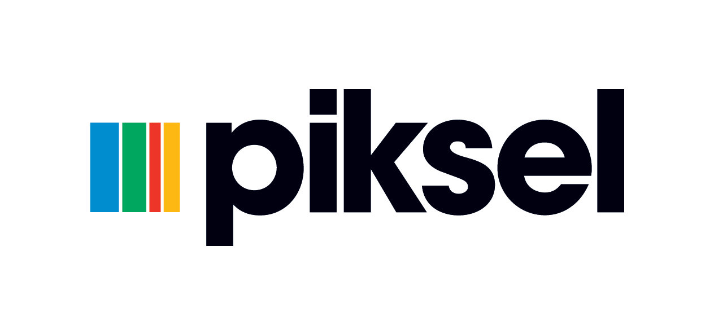
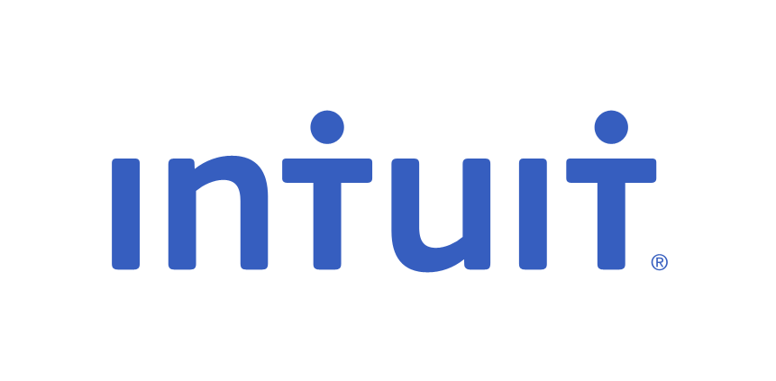
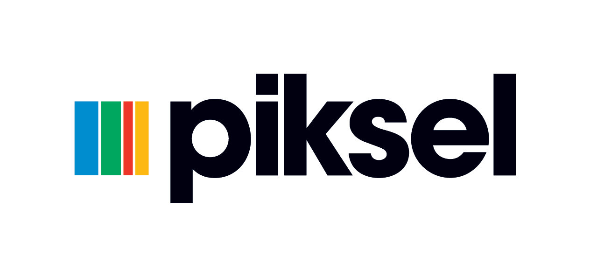

WireMock
Mock your APIs for fast, robust and comprehensive testing
WireMock is a simulator for HTTP-based APIs. Some might consider it a service virtualization tool or a mock server.
It enables you to stay productive when an API you depend on doesn't exist or isn't complete.
It supports testing of edge cases and failure modes that the real API won't reliably produce.
And because it's fast it can reduce your build time from hours down to minutes.

Flexible Deployment
Run WireMock from within your Java application, JUnit test, Servlet container or as a standalone process.
Powerful Request Matching
Match request URLs, methods, headers cookies and bodies using a wide variety of strategies. First class support for JSON and XML.
Record and Playback
Get up and running quickly by capturing traffic to and from an existing API.
Who uses WireMock?



 


